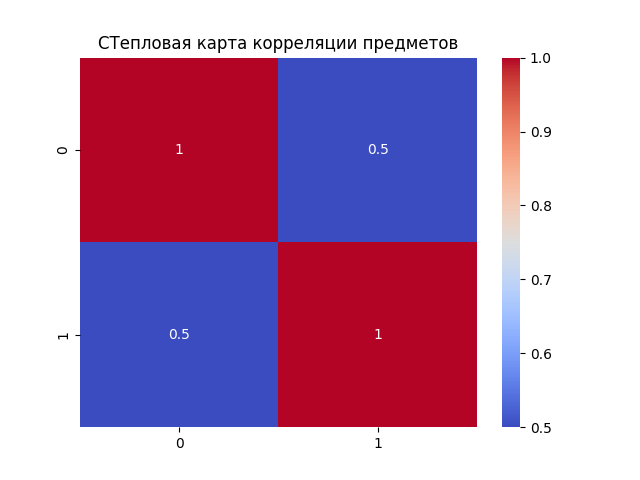
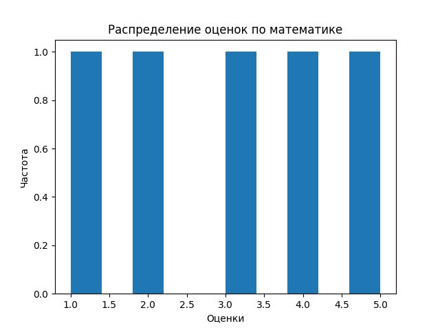
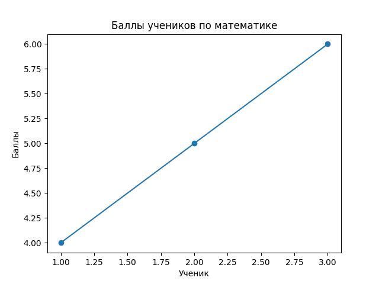
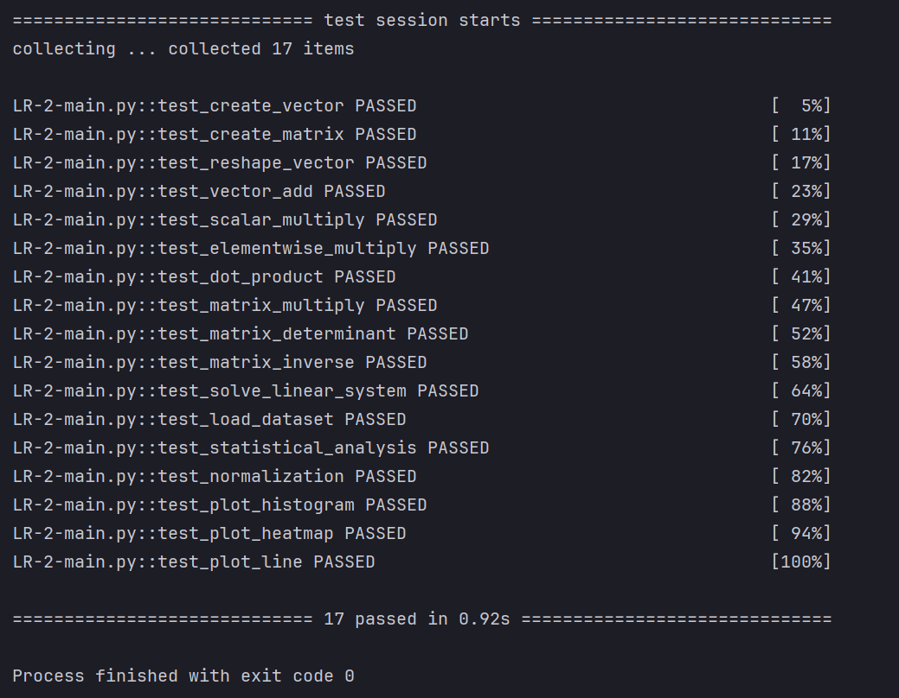

Численные вычисления и анализ данных с использованием NumPy
Отчет
Отчет по лабораторной работе размещен на личном сайте-портфолио и на Github
Описание задачи
Цель лабораторной работы — изучить возможности библиотеки NumPy для выполнения численных вычислений и анализа данных.
В рамках лабораторной работы необходимо было реализовать функции для:
- создания и преобразования массивов
- выполнения векторных операций
- выполнения матричных операций
- статистического анализа данных
- визуализации результатов
Все операции должны выполняться без использования циклов, используя векторизацию NumPy.
Код должен соответствовать требованиям:
- PEP-8 — стиль кода
- PEP-484 — аннотации типов
- PEP-257 — документация
- успешное прохождение тестов
pytest
Структура проекта
numpy_lab/
│
├── main.py
├── test.py
├── data/
│ └── students_scores.csv
└── plots/
Данные
Используется CSV-файл с результатами экзаменов студентов.
math,physics,informatics
78,81,90
85,89,88
92,94,95
70,75,72
88,84,91
95,99,98
60,65,70
73,70,68
84,86,85
90,93,92
Используемые технологии
В лабораторной работе использовались следующие библиотеки:
- NumPy — численные вычисления
- Pandas — загрузка данных из CSV
- Matplotlib — построение графиков
- Seaborn — визуализация корреляций
- PyTest — тестирование функций
Реализация задач
1. Создание и обработка массивов
На первом этапе были реализованы функции для создания и преобразования массивов.
Использованные функции NumPy:
np.arange()np.random.rand()reshape()transpose()
Пример реализации:
def create_vector():
return np.arange(10)
2. Векторные операции
Были реализованы следующие операции:
-
сложение векторов
-
умножение вектора на скаляр
-
поэлементное умножение
-
скалярное произведение
Пример:
def vector_add(a, b):
return a + b
Благодаря векторизации NumPy операции выполняются значительно быстрее, чем при использовании циклов.
3. Матричные операции
-
В рамках лабораторной работы были реализованы операции линейной алгебры:
-
умножение матриц
-
вычисление определителя
-
нахождение обратной матрицы
-
решение системы линейных уравнений
Для этого использовался модуль:
numpy.linalg
Пример:
def matrix_multiply(a, b):
return a @ b
4. Статистический анализ
Для анализа данных были вычислены следующие показатели:
-
среднее значение
-
медиана
-
стандартное отклонение
-
минимальное значение
-
максимальное значение
-
25 и 75 перцентили
Использованные функции NumPy:
np.mean
np.median
np.std
np.min
np.max
np.percentile
Также была реализована min-max нормализация данных.
Формула нормализации:
(x - min) / (max - min)
Вот аккуратно отформатированный Markdown-фрагмент для README. Я исправил структуру, списки и добавил блоки кода — так он будет выглядеть профессионально на GitHub и в MkDocs.
5. Визуализация данных
Для визуализации результатов использовались библиотеки Matplotlib и Seaborn.
Были построены следующие графики:
Гистограмма распределения оценок
Показывает распределение оценок студентов.

Тепловая карта корреляции
Показывает корреляцию между оценками по различным предметам.

Линейный график
Показывает зависимость оценки по математике от номера студента.

Нюансы реализации
При выполнении лабораторной работы возникло несколько особенностей.
Векторизация NumPy
NumPy позволяет выполнять операции над массивами без использования циклов, что значительно ускоряет вычисления.
Типы данных
Некоторые функции NumPy возвращают тип numpy.float64.
Для корректной работы тестов значения иногда приводились к типу float.
Сохранение графиков
Перед сохранением графиков необходимо убедиться, что папка plots существует:
os.makedirs("plots", exist_ok=True)
````
### Тестирование
Все функции проверялись с помощью **pytest**.
```bash
pytest -v
Все тесты успешно проходят.

Запуск проекта
Создание виртуального окружения
python -m venv numpy_env
Активация окружения
Windows
numpy_env\Scripts\activate
Linux / Mac
source numpy_env/bin/activate
Установка зависимостей
pip install numpy matplotlib seaborn pandas pytest
Запуск тестов
pytest -v
Вывод
В ходе лабораторной работы были изучены основные возможности библиотеки NumPy для выполнения численных вычислений и анализа данных.
Были реализованы следующие операции:
- работа с массивами
- векторные операции
- операции линейной алгебры
- статистический анализ
- визуализация данных
Использование векторизации NumPy позволяет писать компактный и эффективный код и значительно ускоряет вычисления при работе с большими массивами данных.
Выполнил студент Ломаченко Ян (505115, P3120) Ссылка на сайт: https://yannisbtw.github.io/